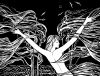
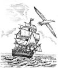
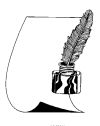

Страницы авторов "Тёмного леса"
Страница "Литературного Кисловодска"
Пишите нам! temnyjles@narod.ru
Альманах знакомит читателей с произведениями творческой интеллигенции Кавминвод, Ставрополья, России, зарубежья.
Первый выпуск "Литературного Кисловодска" вышел в 1996г. Он содержал стихи Станислава Подольского, Светланы Гаделия, Владимира Литвинова, Евгения Бригиневича, Виктории Боташевой, Натальи Капковой, Сергея Смайлиева.
С 1998г. "ЛК" стал выходить регулярно, поначалу ежегодно, потом чаще, раза три в год; и объем увеличился раза в три. И кроме стихов все больше стали присутствовать другие жанры - проза, мемуары, публицистика, литературоведение.
Уважаемый Станислав Яковлевич!
Выражаем признательность за вклад в развитие ставропольской литературы и ее продвижение на всероссийском уровне.
Благодаря Вам альманах "Литературный Кисловодск" приобрел популярность не только в нашем крае, но и за его пределами. Страницы журнала стали площадкой литературных дискуссий и живых диалогов, еще одной возможностью познакомится с именами "непрочитанных поэтов России".
Желаем Вам вдохновения и исполнения всех творческих замыслов!
Первый заместитель министра
Г.Н. Павлова
Как-то отзываться об альманахе не решаюсь, ибо в целом он выше похвал, больше напоминает хорошую дружескую сходку, турнир, но без победителей и призов: все хороши, каждый на своём месте.. Большая удача и почёт оказаться в таком кругу - пусть даже гостем... (Мирон Этлис, психиатр. "ЛК" N34)
Дорогие "ЛК"-ашники! Мне приятно видеть, что от номера к номеру повышается профессиональный уровень авторов (не говорю о корифеях, которые в последнем номере превосходны). И новые имена не разочаровывают. (Анна Мотенко, эколог. "ЛК" N34)
Мне хочется выразить свое восхищение той работой, которую проводите Вы и сотрудники Вашего журнала на протяжении многих лет. Вклад ее в развитие Ставропольской поэзии, воистину, бесценен. Вы ведете неоценимую просветительскую деятельность, показывая срез современного литературного процесса не только у нас, на Ставрополье, но, отчасти, и в России. В то время, когда писательские Союзы делят спонсорские крохи и власть, когда замалчивание и игнорирование многих талантов выбивает почву у них из-под ног, лишая всяческого смысла их писательский труд, ваш журнал дает возможность им быть прочитанными, да и не только им, а еще многим провинциальным литераторам, для которых подобные публикации важны, как воздух: ведь именно в них и существует та живая связь с читателем, от души - к душе, от сердца - к сердцу, которая дает каждому творцу крылья вдохновения. Я считаю, что "ЛК" является достойной альтернативой тем, выхолощенным субъективной цензурой и личностными пристрастиями именитым журналам, издаваемым в нашем крае, в которых содержание определяют редакторский субъективизм и причитающиеся за публикации гонорары. Демократизм издания вскладчину, имеет свои несомненные плюсы. Вы даете возможность литераторам разного уровня публиковать свои произведения, а также позволяете самому читателю делать беспристрастный выбор в пользу того, или иного автора. Ваш сборник - это та самая золотоносная жила, в которой вместе с песком встречаются настоящие поэтические сокровища, способные обогатить внутренний мир каждого, кто прикасается к ним взглядом и душой. Мне также очень импонирует та доброжелательная интонация, которая звучит в коротеньких анонсах, ремарках, вставках, в которых Вы поздравляете собратьев по перу с важными событиями в их жизни: с выходом новых книг, с удачными публикациями. От них веет искренним теплом и участием. А это стоит многого. К тому же тот факт, что Вы публикуете на страницах журнала и отклики читателей, придает ему еще большую актуальность и возможность реального, живого диалога. (Татьяна Корниенко, поэтесса, член СПР. "ЛК" N34)
Во первых строках моего письма скажу всем: "Привет, графоманы!" Не сочтите за оскорбление... Хотелось бы высказаться по поводу альманаха "ЛК". Прочитал от корки до корки. Сначала внимательно исследовал корки, т.е. обложки. Удивил тираж - вполне приличный для нашего времени. Потом взялся за чтение и... с удовольствием прочитал весь альманах. Выяснилось, что журнал издаётся вскладчину, а я-то думал-сомневался, где же нашлись богатенькие ребята, пожелавшие раскошелиться на неприбыльное дело. От чтения журнала получил большое удовольствие. Понравилось построение: рубрики, темы, почта, демократичность подхода к авторам разных возрастов и мировоззрений. Пишите все и обо всём! Даже можно выругаться, если так уж хочется. Не будем строгими критиками, ведь все мы пишем... для себя. Как честно и открыто выразился Г. Трофимов из Ухты: "Для кого пишу, приятель ? А пожалуй, для себя... Для себя и... для ребят". Под ребятами автор подразумевает всё поэтическое сообщество,собравшееся вокруг альманаха "ЛК". Да простят ему некоторую фамильярность "маститые". Если даже один из "ребят" прочтёт ваши творения, то уже есть повод для радости. Хотелось бы обратиться к тем литераторам, которые считают себя состоявшимися. "Не будьте строгими судьями. Мы все графоманы-любители, а вы-то уже графоманы-профессионалы. (Александр Квиток, геолог на пенсии. "ЛК" N34)
Ваш альманах произвел на меня огромное впечатление и добротностью публикаций, и географией авторов, и жанровым разнообразием. (Василий Помещиков, журналист. "ЛК" N35)
Здесь есть всё - печаль и радость, разлуки и встречи, любовь счастливая и несчастная, старики и молодежь. Разные авторы, разные судьбы, проза, поэзия. Большая жизнь в маленьком журнальном формате 1/16. Спасибо всем нам - участникам этого проекта, и спасибо его координатору, который сумел собрать воедино эту мозаичную картинку. (Анна Мотенко, экологиня. "ЛК" N39)
Присоединяюсь ко всем, кто благодарен Станиславу Яковлевичу Подольскому, за то что он нас так объединил и никак не разделяет на "красных" и "белых". (Любовь Соболева. "ЛК" N47)
Много талантливых людей проходят к вашему альманаху. Дай Бог вам здоровья на долгие годы. И того же и альманаху. (Геннадий Трофимов, поэт. "ЛК" N47)
Хорошо, что в альманахе много полемических материалов. Значит мир авторского актива "ЛК" не затянут рутиной равнодушия. Он живёт, он бурлит, он дерзит, он радуется успехам сотоварищей и смело говорит, если что-то не так. (Василий Помещиков, Киров. "ЛК" N48-49)
Альманах продолжаю перечитывать, открывая для себя каждый раз новое, потому ли, что разное настроение бывает, или потому что спряталось, не сразу раскрылось написанное авторами. (Светлана Колбасина. "ЛК" N50)
Номер от номера альманах крепнет, у него есть свои отличия, амплитуда движения, дыхание и голос. Очень рада, что журнал за номера и годы не утратил искренности, характера, живости. Он - пульсация жизни - яростной, нежной, грозной или безоблачной, и ни в коем случае не рефлекторное отображение бытия или подиум для самолюбования авторов. Сегодня "ЛК" - для многих честных и чистых литературных голосов - последняя возможность сказаться и быть услышанным. По нему можно отслеживать творческий рост авторов, изменение почерка, поиски стиля, путь к слову и себе. Думаю, расслабляться на этом пути не стоит, надо лишь по примеру человека, который всех нас объединил не только под одной обложкой, но и в жизни, не проходить мимо искр таланта, встречающихся в дороге, быть чуткими, зоркими и слышащими. А наша задача - жить и писать ответственно, на совесть, как это делали наши предшественники - великие известные и великие неизвестные поэты и прозаики России, мира, будучи там, где страна - пространство для страниц, где обрыв строки - как залп картечи, где копаясь в головешках речи, чуешь диких пламенных жар-птиц! (Елена Гончарова, поэтесса. "ЛК" N51)
Всегда с интересом вчитываюсь в строчки стихов в разделе "Непрочитанные поэты России". Наверно, пытаюсь понять сокрытое, недошедшее в своё время до моего разума, и теперь, с запозданием, осмыслить: а что там было? (Светлана Колбасина. "ЛК" N51)
Давно я собиралась написать заметку о честных стихах, которые нередко встречаются на страницах "ЛК". Это непрофессиональные, порой недостаточно зарифмованные стихи, но написанные от сердца. В них нет вычурности, оригинальничания, которыми страдают некоторые из нас (в том числе и я). (Анна Мотенко, экологиня. "ЛК" N51)
Вот уже три года я регулярно получаю альманах "ЛК" и внимательно читаю его от корки до корки, а потом перечитываю то, что мне понравилось. Радует разнообразие жанров и свободное общение, отклики на опубликованное, даже полемика по поводу того или иного вопроса. Чтение литературных мэтров - это целая наука. (Валентина Кравченко. "ЛК" N51)
Заочно познакомилась с плеядой замечательных, творческих людей нашей огромной страны - России. Стало радостно на душе - не так уж и мало! Ура!!! Не оскудела земля российская талантами. Жить будем! (Зоя Дрига, поэтесса. "ЛК" N52)
Почтальон принёс бандероль с очередным номером "Лк". Нетерпеливо разрезаю обёртку, достаю журнал, начинаю перелистывать. Что-то сразу читаю. И меня охватывает такое ощущение, что я попал в компанию хороших, добрых друзей. (Василий Помещиков, писатель. "ЛК" N53)
Я благодарна всем авторам альманаха за способность врачевать творчеством. (Светлана Колбасина, поэтесса. "ЛК" N54)
Я понял одно: многое утерял, что не читал это издание! Меня поразили, во-первых, география (Север, Карелия, Беларусь - то есть авторы оттуда и из других мест), во-вторых - тематическое разнообразие... И почта, которая читается как роман с продолжением. Я очень рад, что вам удалось сделать такой прекрасный журнал. Дай Бог здоровья, чтобы это Вами продолжалось ещё долго. (Митрофан Курочкин, журналист. "ЛК" N57)
Не перестаю удивляться и радоваться успехам знакомых поэтов и писателей, а также новым дарованиям, которых собрал альманах "ЛК". (Зоя Дрига. "ЛК" N57)
Первый номер альманаха вышел на рубеже двух веков, двух тысячелетий. За эти годы он состоялся как литературное периодическое издание, сформировался его авторский актив, его круг читателей. (Василий Помещиков, журналист. "ЛК" N62)
С альманахом "ЛК" напрямую познакомилась лишь в этом году, хотя и раньше знала об этом журнале. Меня поразила его открытость, очень искренние, правдивые очерки, удивительная свежесть стихов, их разнообразие - от мужественных до глубоко лирических, параллели и меридианы адресов их авторов. (Галина Маркова, физик. "ЛК" N65)
Я горд и счастлив тем, что наш "ЛК" ведёт такой большой (всероссийского масштаба) писатель, как Станислав Яковлевич Подольский. Это благодаря ему журнал из разряда "местное издание" приобрёл всероссийскую популярность. Его читают даже во многих зарубежных странах. Он (журнал) не только даёт возможность широкому кругу авторов публиковать свои произведения, но и поднимает литературоведческие темы, предоставляет возможность вести литературные дискуссии, знакомит с именами "непрочитанных поэтов России". (Василий Помещиков. "ЛК" N69)
Казалось бы, небольшие воспоминания о былом, но именно так пишется история страны, история нашего народа. (Галина Маркова. "ЛК" N70)
обожаю наш ЛК! Спасибо судьбе, что свела меня с ним! (Марина Лунева. "ЛК", N71)
Необозримы просторы нашей великой страны. И всюду: на Севере, на Востоке, на Западе и на Юге и, даже за её пределами, можно встретить друзей и почитателей альманаха "Литературный Кисловодск", родившегося в канун прихода третьего тысячелетия. (Георгий Камский, журналист. "ЛК", N72)
Я часто ловлю себя на ощущении, что "Литературный Кисловодск" - это наш общий дом, в котором мы живём, общаемся, радуемся успехам друг друга, сочувствуем, если что-то у кого-то не так. (Василий ПОМЕЩИКОВ, журналист. "ЛК", N73)
То что альманах продержался на свете так много лет, несмотря на все трудности, и продолжает привлекать новых авторов, дорожа и теми, кто давно уже сотрудничает с редколлегией, не может не радовать. (Иван Аксёнов, член СПР. "ЛК" N83)
Я.Юдович, Б.Ш., М.Вишнякова. Полемика о "ЛК"
Наталья Рябинина. О журнале ""Литературный Кисловодск"
Светлана Колбасина. О журнале "Литературный Кисловодск"
Василий Помещиков. Журнал всероссийского масштаба (о "Литературном Кисловодске")
Василий Помещиков. Мои впечатления о номере "ЛК"-80
Ирина Бжиская. О "Литературном КИСЛОВОДСКЕ" (рецензии на 58-й и 68-й номера)
Иван Аксенов. Листая альманах "ЛК"-68 (рецензия)
Галина Маркова. Отклик на "ЛК" n64



Галина Ермошина. Литературный Кисловодск (Зеленая гора) ("Знамя", 2005г., N2)
Юрий Щербаков. В Кисловодске - весна ("Литературная газета", 2012г., N14(6364))
"Литературный Кисловодск": за 25 лет - 82 выпуска ("Кисловодская газета", 23.03.2023)
Страница "Литературного Кисловодска"
Страницы авторов "Литературного Кисловодска"
Стихи из "Литературного Кисловодска"
Поэмы из "Литературного Кисловодска"
Избранные рассказы из "Литературного Кисловодска"
Биографические и краеведческие очерки из "Литературного Кисловодска"
Литературоведческие очерки из "Литературного Кисловодска"
Стихи из "Литературного Кисловодска"
Избранные стихи из "Литературного Кисловодска"
Объявления о продаже книг авторов "Литературного Кисловодска"
Страница "Литературного Кисловодска"
Страницы авторов "Литературного Кисловодска"
Последнее изменение страницы 31 Jul 2023
{kind=link}
{kind=link}
{kind=link}